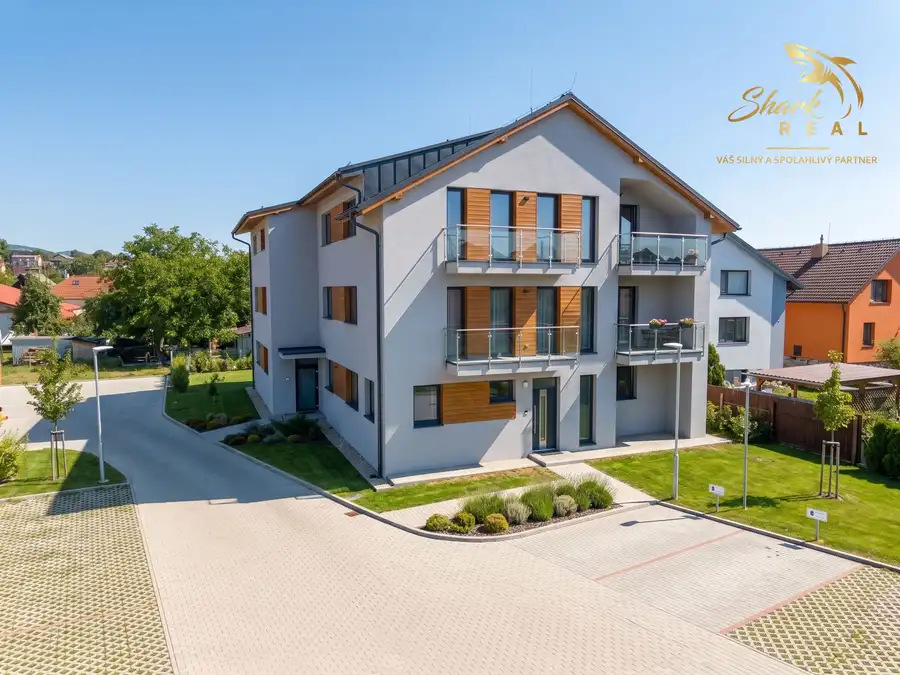
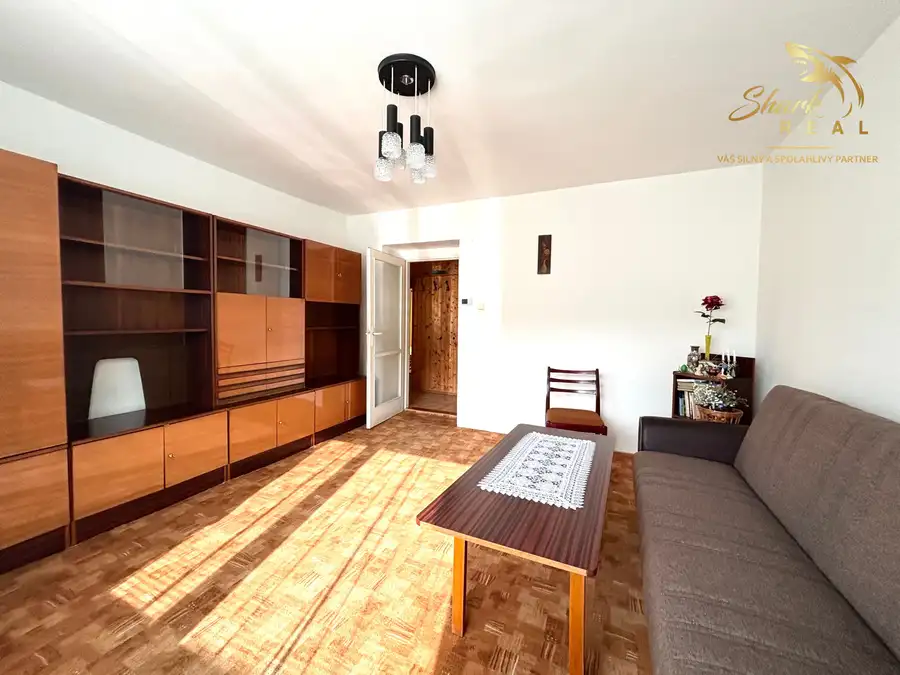
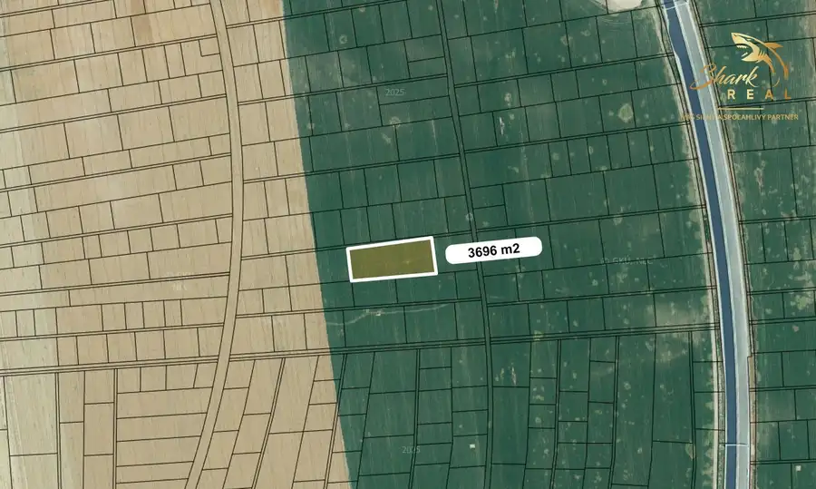
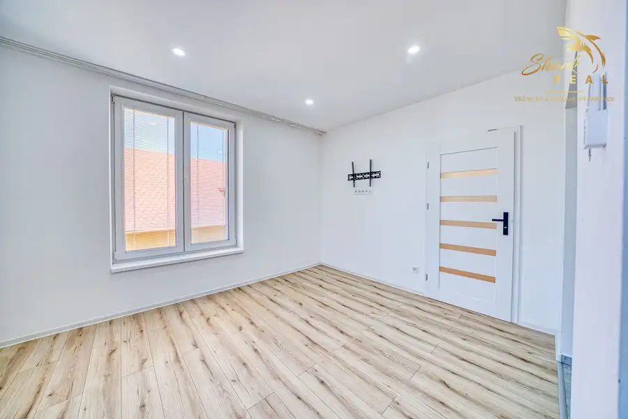
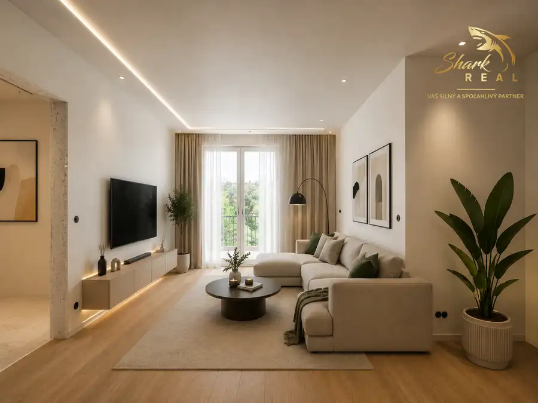

Aktuálna ponuka
11 nehnuteľností, predovšetkým byty, rodinné domy, pozemky. Každá má vlastnú stránku s fotkami, popisom a mapou.
Prezrieť ponukuAdela FaybíkováRealitná maklérka
Realitná maklérka · Shark real s. r. o.
Predaj a prenájom nehnuteľností · Prešov, Šarišské Michaľany, Sokoľany

 BytNové10
152 500 €Shark real/predaj 3 izbový byt novostavba
Lipany
3-izbový55 m²1. podlažie
PONÚKAME NA PREDAJ moderný 3-izbový tehlový byt na ulici Sládkovičova v Lipanoch. Bytová jednotka bola zrealizovaná v roku 2024 v rámci…
DomNové10
75 000 €SHARK REAL/PREDAJ, ZNÍŽENÁ CENA rozostavaný dom na predaj blízko Košíc
Sokoľany
200 m²
Ponúkame na predaj rozostavanú nehnuteľnosť s veľkým potenciálom. Objekt sa nachádza v obci Sokoľany, na pozemku s výmerou 430 m2, úžitková plocha…
BytNové10
139 500 €SHARK REAL/NOVÁ CENA PREDAJ 3 izbového bytu blízko centra
Sabinov
3-izbový70 m²1. podlažie
SHARK REAL vám EXKLUZÍVNE ponúka na predaj priestranný 3-izbový byt s výmerou 70 m² v Sabinove. Byt je vhodný pre rodinu, aj ako investícia, pričom…
BytNové10
152 500 €Shark real/predaj 3 izbový byt novostavba
Lipany
3-izbový55 m²1. podlažie
PONÚKAME NA PREDAJ moderný 3-izbový tehlový byt na ulici Sládkovičova v Lipanoch. Bytová jednotka bola zrealizovaná v roku 2024 v rámci…
DomNové10
75 000 €SHARK REAL/PREDAJ, ZNÍŽENÁ CENA rozostavaný dom na predaj blízko Košíc
Sokoľany
200 m²
Ponúkame na predaj rozostavanú nehnuteľnosť s veľkým potenciálom. Objekt sa nachádza v obci Sokoľany, na pozemku s výmerou 430 m2, úžitková plocha…
BytNové10
139 500 €SHARK REAL/NOVÁ CENA PREDAJ 3 izbového bytu blízko centra
Sabinov
3-izbový70 m²1. podlažie
SHARK REAL vám EXKLUZÍVNE ponúka na predaj priestranný 3-izbový byt s výmerou 70 m² v Sabinove. Byt je vhodný pre rodinu, aj ako investícia, pričom…
 Byt10
174 000 €Shark real/predaj 4 izbový byt novostavba
Šarišské Michaľany
3-izbový64 m²2. podlažie
Ponúkame na predaj moderný 4 izbový byt v novostavbe, v lokalite Šarišské Michaľany. Byt sa aktuálne nachádza v štádiu pred dokončením a je preto…
Byt10
174 000 €Shark real/predaj 4 izbový byt novostavba
Šarišské Michaľany
3-izbový64 m²2. podlažie
Ponúkame na predaj moderný 4 izbový byt v novostavbe, v lokalite Šarišské Michaľany. Byt sa aktuálne nachádza v štádiu pred dokončením a je preto…

Byt10 114 000 €Shark real/predaj 1,5 izbový byt novostavba Šarišské Michaľany 1-izbový45 m²1. podlažie Ponúkame na predaj moderný byt v novostavbe, v lokalite Šarišské Michaľany. Byt sa aktuálne nachádza v štádiu pred dokončením a je preto vhodný pre…
Byt10 127 000 €SHARK REAL/predaj 2 izbového bytu pri Prešove. Šarišské Michaľany 2-izbový56 m²1. podlažie PONÚKAME NA PREDAJ tehlový 2-izbový byt v obci Šarišské Michaľany.VÝMERA:56 m² + pivnica 19 m²POSCHODIE:1. poschodie DISPOZIČNÉ RIEŠENIE:Byt…
Pozemok3 17 540 €SHRAK REAL/PREDAJ investičných pozemkov pri Košiciach Krásna, Košice 877 m² SHARK REAL ponúka na predaj investičné pozemky - orná pôda v lokalite Košice-Krásna. Rovinaté pozemky neďaleko zastavanej časti Košice Krásna a…
Byt10 149 500 €SHARK REAL/PREDAJ 2 izbový byt v Lipanoch v centre Lipany 2-izbový52 m²1. podlažie PONÚKAME NA PREDAJ moderný 2-izbový tehlový byt na ulici Sládkovičova v Lipanoch. Bytová jednotka bola zrealizovaná v roku 2024 v rámci…
Byt9 129 000 €Shark real/predaj 2 izbového bytu novostavba Šarišské Michaľany 2-izbový55 m²1. podlažie Ponúkame na predaj moderný 2 izbový byt v novostavbe, v lokalite Šarišské Michaľany. Byt sa aktuálne nachádza v štádiu pred dokončením a je preto…Tomuto výberu zatiaľ nezodpovedá žiadna ponuka. Napíšte mi, čo hľadáte.
Volám sa Adela Faybíková. Som realitná maklérka kancelárie Shark real s. r. o. a pôsobím predovšetkým v lokalitách Prešov, Šarišské Michaľany, Sokoľany a Lipany (Prešovský kraj).
11 nehnuteľností, predovšetkým byty, rodinné domy, pozemky. Každá má vlastnú stránku s fotkami, popisom a mapou.
Prezrieť ponukuPrešov, Šarišské Michaľany, Sokoľany, Lipany, Sabinov a okolie. Ponuku si môžete prezrieť podľa lokality.
Nehnuteľnosti v lokaliteOdhad trhovej ceny, príprava prezentácie, obhliadky, zmluvy a odovzdanie nehnuteľnosti.
Dohodnúť stretnutieKaždý špendlík je jedna nehnuteľnosť z mojej ponuky. Kliknite a pozrite sa.
© prispievatelia OpenStreetMap
Na čo sa pýtate najčastejšie, skôr než sa stretneme.
Odhad trhovej ceny vychádza z aktuálnych ponúk a predajov v lokalite, nie z cenníkových tabuliek. Podmienky Vám poviem pri prvom telefonáte.
Najprv obhliadka a odhad ceny, potom príprava prezentácie (fotografie, popis, inzercia), obhliadky so záujemcami, rezervačná zmluva, kúpna zmluva, návrh na vklad do katastra a odovzdanie nehnuteľnosti. O každom kroku viete vopred.
Najrýchlejšie cez WhatsApp alebo telefón. Termín stretnutia alebo obhliadky dohodneme podľa Vás.